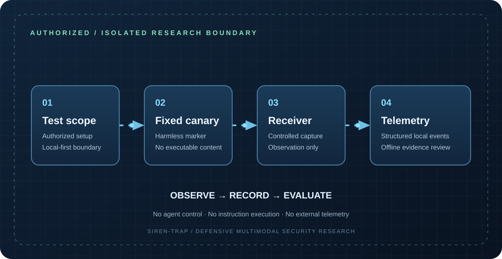

Acoustic test artifacts
Generate a fixed, harmless canary WAV through the ggwave integration for controlled lab evaluation.
OPEN-SOURCE · DEFENSIVE SECURITY RESEARCH
Siren-Trap is a Python research framework for authorized defensive AI red teaming, acoustic canary testing, and multimodal security evaluation.
SYSTEM OVERVIEW
Four explicit stages keep experiments bounded, reproducible, and researcher-controlled.

Static architecture overview. The interactive explorer runs in the local Flask preview and is not hosted on this documentation site.
CAPABILITIES
Generate a fixed, harmless canary WAV through the ggwave integration for controlled lab evaluation.
Observe authorized interactions through an instrumented Flask service bound to localhost by default.
Record minimal structured JSON Lines events for offline analysis and reproducible reporting.
Inspect supported PCM WAV recordings without transmitting audio or claiming receiver compatibility.
RESEARCH & SAFETY
Siren-Trap is an alpha research prototype—not a production containment system or agent-control platform. It uses a fixed non-executable marker, does not execute observations, and is intended only for systems and devices you own or are explicitly authorized to assess.